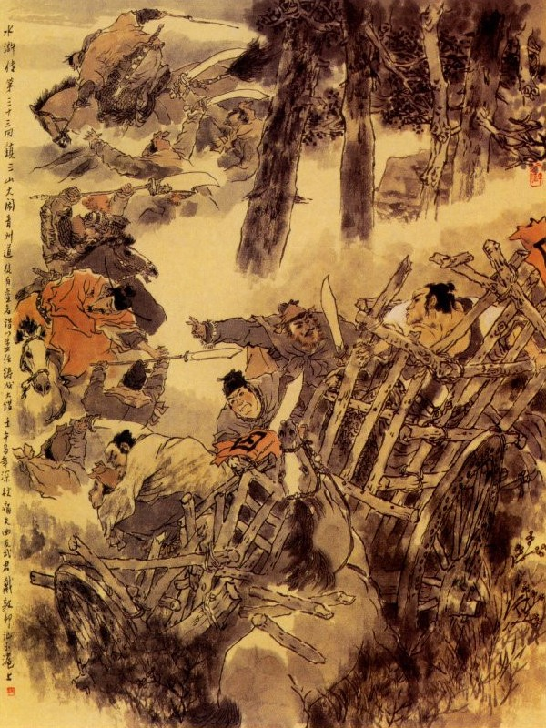
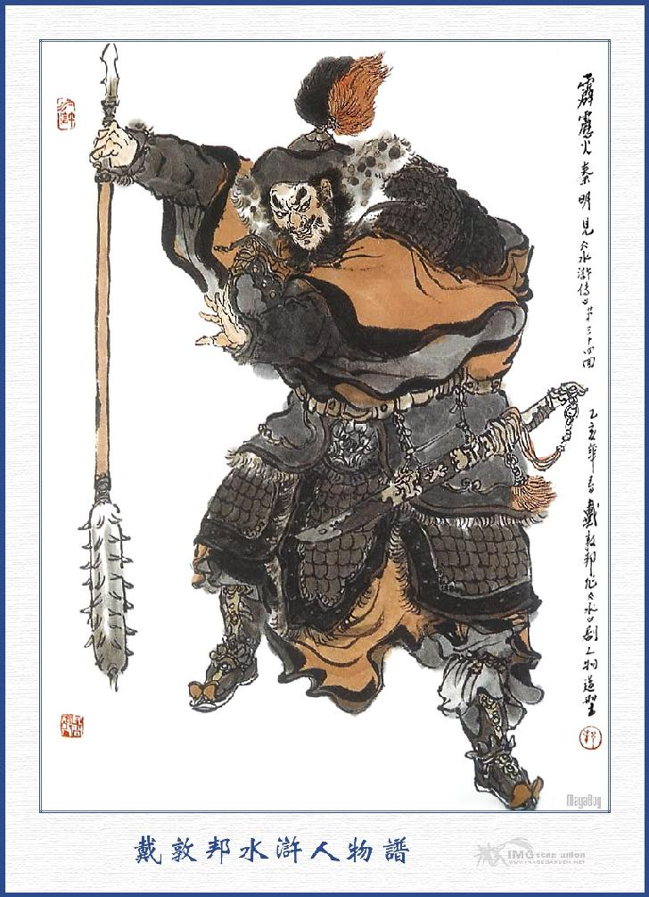
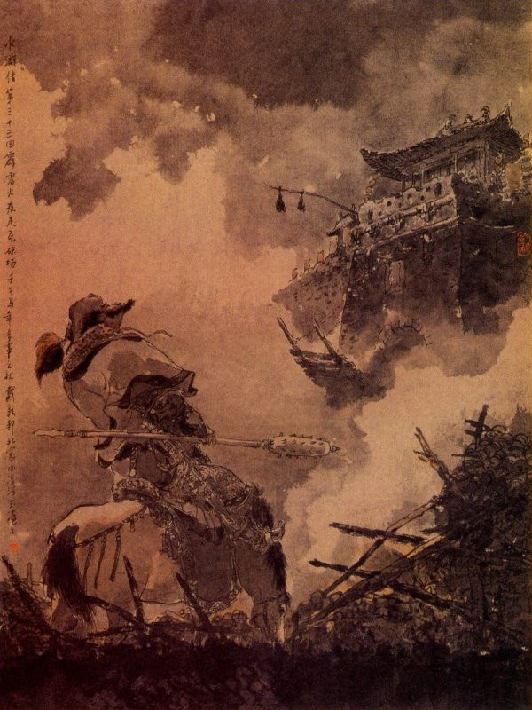

Bấy giờ Lưu Tri Trại mình mặc áo nhung phục, tay cầm quân khí, cưỡi lên mình ngựa, cùng với Hoàng Tín, dẫn hơn một trăm quân, đao gươm sáng quắc, chiêng trống vang lừng, đi ra cổng trại mà áp tải Hoa Vinh và Tống Giang, trông chừng thẳng nẻo Thanh Châu. Đi được ba bốn mươi dặm đường, gần đến một khu rừng kia, bỗng thấy đám lính đi trước bảo nhau rằng:
- Phía rừng trước mặt có người nom dòm, ta hãy đứng dừng lại.
Nói xong liền đứng dừng lại cả. Hoàng Tín thấy vậy, ngồi trên mình ngựa mà bảo rằng:
- Sao đương đi lại đứng dừng như thế?
Chúng bẩm rằng:
- Phía trước có người thám thính chi đó.
Hoàng Tín quát lên rằng:
- Mặc xác nó, cứ đi đi.
Dần dần đi gần tới khu rừng trước mặt thì bỗng nghe có tiếng thanh la khua gỡ vang lừng, quân chúng ai nấy đều kinh sợ hoang mang, phải cố công ra sức mà chạy.
Hoàng Tín thấy vậy, quát chúng đứng lại sắp hàng ra trước mặt rồi bảo Lưu Cao coi áp lấy xe tù. Lưu Cao ngồi trên mình ngựa, cố hết sức mà không sao cất mồm vâng lên được, trong miệng chỉ lẩm bẩm khấn rằng:
- Nam mô cứu khổ cứu nạn thiên tôn. ối trời ơi! Mười vạn quyển kinh, ba mươi đàn tiếu, cứu vớt cho tôi.
Chàng vừa khấn, vừa run sợ sắc mặt biến hẳn, khi vàng khi xanh như người mất máu. Duy Hoàng Tín là một tay võ quan xuất thân, nên vẫn bền gan vững dạ, vỗ ngựa xông đến để xem. Khi gần tới nơi, thấy có bốn năm trăm tiểu lâu la, người to sức khỏe mặt mũi dữ tợn, đầu bít khăn hồng mình mặc áo ngắn, lưng đeo gươm sáng, tay cầm giáo dài, chia bốn ngả vây bọc lấy bọn quân quan. Đoạn rồi có ba hảo hán ở trong rừng xông ra, một người mặc áo xanh, một người mặc áo tím và một người mặc áo hồng, đều đầu đội khăn chữ Vạn, tay vác thanh đao, cùng trổ ra ngăn đón đường đi. Người đi giữa là Cầm Mao Hổ Yến Thuận, người đi cạnh là Nụy Cước Hổ Vương Anh và người đi cánh dưới là Bạch Diện Lang Quan Trịnh Thiên Thọ ba người cùng quát lên rằng:
- Ai đi qua đó, phải đứng dừng lại nộp ba nghìn quan tiền thuế đường đây rồi mới được đi.
Hoàng Tín ngồi trên mình ngựa thét mắng rằng:
- Các anh không được vô lễ thế, Trấn Tam Sơn ở đây có biết không?
Ba anh hảo hán lại trừng mắt mà quát lên rằng:
- Anh là Trấn Vạn Sơn cũng phải để ba nghìn quan tiền lại đây, bằng không thì chúng ta không buông tha cho đi.
Hoàng Tín đáp rằng:
- Ta là Đô Giám đi việc quan làm gì có tiền mà cho các ngươi?
Ba chàng kia cả cười mà rằng:
- Đô Giám thì làm gì? Đến ngay Hoàng Đế qua đây cũng phải nộp ba nghìn quan mới được. Nếu không có thì lưu mấy người lại đây rồi sau đem tiền đến chuộc.
Hoàng Tín nghe nói nổi giận đùng đùng mắng rằng:
- Quân cường tặc này vô lễ quá?
Nói xong quát tả hữu nổi trống chiêng vỗ ngựa múa gươm xông ra đánh Yến Thuận. Bên kia ba vị hảo hán đều múa đao xông vào cự địch. Hoàng Tín ngồi trên mình ngựa, hết sức đánh đỡ được hơn mười hiệp thì nghe chừng sức kém, khó lòng mà địch nổi ba người. Đằng kia Lưu Cao vẫn run cầm cập, đứng ra nhìn lại thấy địa thế như vậy thì chỉ chực thừa cơ mà chạy thoát thân. Sau Hoàng Tín thấy thế ba người hăng hái, sợ khi lỡ ra mình lại bị bắt thì tất nhiên giảm mất uy danh, liền ngoắt cương ngựa quay về lối sau để chạy. Ba anh hảo hán thấy vậy cùng nhau gắng sức đuổi theo. Hoàng Tín không kịp nom đến quân lính, ra roi hết sức mà chạy tháo một mình về tót ngay Trấn Thanh Phong. Quân lính trông trước sau không thấy Hoàng Tín đâu nữa, liền reo hò ầm ĩ, bỏ cả xe tù mà kéo nhau chạy hết. Bấy giờ còn trơ một mình Lưu Cao, thấy nguy cấp tới nơi, vội vàng quất ngựa ra roi cũng toan chạy mau cho thoát. Dè đâu mới chạy được mấy bước thì bỗng bị đám lâu la giật giây chăng dưới mặt đất làm cho con ngựa ngã gục xuống mà bắn hẳn Lưu Cao ra ngoài. Bọn lâu la kéo nhau vào bắt trói Lưu Cao rồi cướp lấy xe tù mở ra để cứu. Khi đó Hoa Vinh đã đạp phá xe tù của mình, nhẩy bổ ra ngoài giựt đứt các giây trói ở tay rồi phá tan xe tù kia để đón Tống Giang ra. Bọn lâu la bóc lột quần áo của Lưu Cao đưa cho Tống Giang mặc rồi cướp lấy con ngựa của Lưu Cao, và ba cỗ ngựa đóng xe mà đưa Tống Giang về trước. Đoạn rồi ba tay hảo hán cùng Hoa Vinh và mấy tên tiểu lâu la trói trần truồng Lưu Cao mà áp giải lên sơn trại.

Nguyên sau khi ba vị hảo hán ở núi Thanh Phong đã từ biệt Tống Giang thì trong lòng lấy làm áy náy không yên, bèn sai mấy tên lâu la tinh thạo, đi đến trấn Thanh Phong để dò xem tin tức. Sau khi nghe biết Hoàng Tín cùng Lưu Cao đã bắt cả Hoa Vinh cùng Tống Giang mà đóng xe tù giải lên quan phủ. Nhân thế ba tay hảo hán phải ra công gắng sức, đem tiểu lâu la chận đánh giữa đường mà cứu hai người về trại. Hôm đó vào khoảng canh hai, kéo nhau về đến sơn trại vào tụ nghĩa sảnh, ba người mời Tống Giang và Hoa Vinh ngồi giữa rồi sai dọn rượu lên cùng ngồi tiếp đãi và cho phép đám tiểu lâu la cùng đi đánh chén với nhau. Bấy giờ Hoa Vinh cảm tạ ba tay hảo hán mà nói rằng:
- Hoa Vinh cùng Ca Ca tôi, nhờ được ba tay hảo hán vừa cứu cho, thực là ân sâu nghĩa nặng, chúng tôi xin khắc cốt minh tâm, để sau này báo đáp. Duy Hoa Vinh tôi có vợ và em gái ở trại Thanh Phong tất nhiên là bị Hoàng Tín bắt bớ lôi thôi, vậy nay có phương kế nào mà cứu ra cho được?
Yến Thuận đáp rằng:
- Xin Tri Trại cứ vững tâm, chắc rằng Hoàng Tín cũng không khi nào dám bắt cung nhân mà nếu có nỡ lòng quyết bắt thì tất nhiên cũng phải đem qua lối này, chứ không đi đâu thoát được. Đến sáng mai ba anh em tôi xin xuống núi một phen để đón cung nhân và lệnh muội về đây một thể.
Nói đoạn liền gọi tiểu lâu la sai đi trước để dò thăm tin tức. Hoa Vinh nghe nói liền đứng dậy tạ ơn Yến Thuận, Tống Giang bảo với Yến Thuận rằng:
- Xin hiền đệ truyền giải Lưu Cao lên đây cho.
Yến Thuận vâng lời, sai lâu la trói Lưu Cao vào cột nhà ròi nói với Tống Giang rằng:
- Xin moi lấy ruột gan quân tàn ác ấy để mừng cho Ca Ca.
Hoa Vinh nói:
- Để đó, tôi hạ thủ cho mới được.
Tống Giang trỏ mặt Lưu Cao mà nói rằng:
- Quân tàn ác bất nhân kia, ta với ngươi xưa nay có can thiệp thù oán gì nhau, ngươi nỡ nào nghe một đứa đàn bà vong ân bội nghĩa mà hại đến ta?
Hoa Vinh đứng dậy nói lên rằng:
- Ca Ca hỏi làm gì những giống khốn nạn ấy cho nó bận mồm.
Nói đoạn liền mang dao ra rạch lấy ruột Lưu Cao đem vào để trước mặt Tống Giang rồi sai lâu la vứt xác vào một xó.
Dao oan liếc đá giang hồ,
Từ nay bội bạc ngoan ngu hết hồn?
Bấy giờ Tống Giang nói với mọi người rằng:
- Ngày nay tuy đã giết được đứa thất phu đê mạt ấy, song còn con mụ đàn bà khốn nạn kia, ta cũng không thể nào mà tha cho được.
Vương Anh đáp luôn rằng:
- Sáng mai tôi xin đi bắt về đây, tất phen này về tay tôi hẳn.
Chúng nghe nói ai nấy đều ôm bụng cả cười. Đoạn rồi ăn uống vui cười mãi đến đêm khuya mới nghỉ. Sáng hôm sau cùng nhau bàn định đi đánh trại Thanh Phong, Yến Thuận nói với mọi người rằng:
- Hôm qua bọn lâu la đều bị khó nhọc suốt ngày, hãy xin tạm cho nghỉ một hôm rồi sáng mai sẽ đi sớm cũng được
Tống Giang cùng mọi người đều khen phải, liền cho tụi lâu la chơi nghỉ một hôm, để ngày hôm sau đi đánh trại. Nói về Hoàng Tín, một mình chạy trốn về trại Thanh Phong, bèn kiểm điểm binh mã canh giữ bốn mặt cửa trại rồi thảo công văn giải bầy sự nguy cấp: "Hoa Vinh liên kết với giặc núi Thanh Phong, trại Thanh Phong sớm hôm nguy cấp", để báo với Tri Phủ Mộ dung và xin sai lương tướng mau mau trừ liễu cho xong. Quan Tri Phủ Mộ Dung tiếp được công văn phi báo khẩn cấp về việc quân tình, lại lấy làm cả kinh liền lập tức sai gọi Thanh Châu chỉ huy Tổng quản binh mã là Tần Thống chế, để bàn định việc quân.

TẦN MINH
Người này họ Tần tên Minh, quê ở Khai Châu Sơn Hậu tính nóng nảy, tiếng to như sấm, người ta thường gọi là Tịch Lịch Hoả Tần Minh vốn nhà dòng dõi võ quan. Khiến cây gậy lang nha (nanh con lang) sức khỏe muôn người khôn địch. Bấy giờ Tần Minh nghe lịch Tri Phủ cho mời, bèn vội vàng vào nha thương nghị. Quan Phủ Mộ Dung đưa giấy phi báo của Hoàng Tín cho Tần Thống Chế xem. Thống Chế xem xong cả giận nói rằng:
- Thằng trẻ con đỏ đầu dám vô lễ đến thế thì thôi! Việc này ngài không cần phải lo nghĩ, tôi xin đem quân mã đi ngay, nếu không băt được giặc, xin thề không trông thấy ngài nữa.
- Nếu Tướng Quân chậm trễ một chút thì e sợ khi họ đến đánh trại Thanh Phong nguy mất.
- Khi nào dám chậm trễ, đêm nay tôi xin điểm lấy binh mã; rồi sáng sớm mai phải đi ngay mới được.
Quan Phủ nghe nói cả mừng, liền truyền lịnh sắp sẵn các thức rượu thịt cùng lương khô, đem để ra ngoài thành khao thưởng quân sĩ. Khi đó Tần Minh nghe nói Hoa Vinh làm phản thì trong bụng sôi nổi giận dữ, bèn lên ngựa về dinh Chỉ Huy, điểm lấy một trăm quân mã, một trăm quân bộ, truyền cho ra thành dàn trận thế, để sắp sửa hành binh. Quan phủ Mộ Dung đem người nhà ra một nơi tự viện ở ngoài thành, sai chưng bánh hâm rượu để đợi quân sĩ ra thành mà khao thưởng. Khi kéo quân ra tới cửa thành trước mặt viết một là cờ đỏ bảy chữ "Binh mã Tổng Đốc Tần Thống Chế" rất to, Tần Minh mặc áo nhưng phục, ngồi trên mình ngựa, quả nhiên là một bậc dũng tướng anh hùng.
Tần Minh dẫn quân mã đến gần tự viện, thấy Tri Phủ đứng đón ở đó. Liền vội vàng xuống ngựa để nghinh tiếp. Tri Phủ nâng chén rượu mà mời khuyên Tần Minh và dặn dò cặn kẽ, chúc cho chóng được tấu khải trở về.
Khi khao thưởng quân sĩ đã xong, bèn nổi mấy tiếng súng hiệu rồi Tần Minh từ giã Tri Phủ mà nhảy lên mình ngựa, dàn thành đội ngũ nghiêm trang mà kéo quân đến núi Thanh Phong. Bọn tiểu lâu la ở trên núi biêt tin tức, liền phi báo các vị hảo hán. Bấy giờ các vị hảo hán đương sửa soạn đi đánh trại Thanh Phong bỗng nghe tin báo Tần Minh kéo quân đến đánh thì ai nấy đều nhìn nhau không biết lấy kế sách gì để mà cự địch. Hoa Vinh bảo với mọi người rằng:
- Việc này các ngài không không cần phải lo, xin cứ cho tiểu lâu la ăn uống no say rồi tôi sẽ có kế sách để thi hành. Trước hết ta hãy chơi nhau bằng sức rồi sau phải dùng mẹo mới xong. Xin cứ như thế này. như thế này. có được không?
Tống Giang vỗ tay khen rằng:
- Diệu kế. diệu kế. phải làm như thế mới được.
Nói đoạn, liền cùng với Hoa Vinh cắt đặt các việc và sai đám tiểu lâu la phải phòng bị sẵn sàng, để thi hành kế sách. Hoa Vinh chọn lấy con ngựa tốt, một bộ áo giáp dấy, cùng các đồ gươm giáo cung tên ra để nghinh địch. Nói về Tần Minh khi dẫn quân đến địa phận núi Thanh Phong, liền hạ trại ở ngoài mươi dặm. Sáng hôm sau đầu trống canh năm, quân sĩ trở dậy thổi cơm ăn thật sớm. Ăn uống xong rồi, nổi súng hiệu, kéo quân ra chỗ rộng ở sát núi Thanh Phong mà dàn thành trận thế. Bỗng đâu nghe thấy tiếng chuông trống vang trời, Tần Minh liền kim cương ngựa, đứng dừng lại, hoành ngang cây gậy lang nha, trợn mắt lên nhìn thì thấy Tiểu Lý Quảng Hoa Vinh, dẫn một toán binh ngựa phi xuống núi. Khi xuống đến chân núi. Hoa Vinh sai bày thành trận thế rồi cầm giáo ngồi trên mình ngựa, quay mặt cúi chào Tần Minh. Tần Minh giận dữ quát lên rằng:
- Người là một mệnh quan của Triều đình, vốn dòng cửa tướng xưa nay, triều đình sai ngươi giữ chức Tri Trại coi giữ một phương, lộc nước ơn vua, phỏng có điều gì tệ bạc? Lẽ nào ngươi dám liên kết với giặc cướp mà bội bạc lại triều đình như vậy. Nay ta đến đây bắt người đem về nộp với triều đình, ngươi có phải là biết điều thì xuống ngựa mà chịu trói cho xong, chớ để ta bận đến chân tay thêm việc.
Hoa Vinh tươi cười đáp rằng:
- Dám bẩm Tổng Quản, như Hoa Vinh này có bao giờ dám mang tâm bội bạc triều đình, cho nặng. Cái đó chẳng qua là lão Lưu Cao lấy không làm có, đem việc công để trả thù riêng, khiến cho tôi có nhà như mất, có nước như không, bởi thế nên phải tạm đến lánh mình ở đây, xin Tổng Quản xét lại mà giải cứu cho.
Tần Minh không hỏi phải trái chi nữa, quát ngay lên rằng:
- Không xuống ngựa cho ta trói lại, còn đợi đến bao giờ? Ngươi đừng nói khéo để rối loạn quân tâm nữa?
Nói xong thét tả hữu khua trống rồi múa gậy xông vào đánh Hoa Vinh, Hoa Vinh cả cười mà rằng:
- À! Té ra Tần Minh không hiểu lòng tốt của người ta! Ta đây nghĩ đến ngươi là một chức quan trên, nên mới khiêm nhượng như vậy, ngươi đã cho ta là sợ ngươi hay sao?
Nói đoạn múa giáo xông ra đánh Tần Minh. Đôi bên cự địch với nhau, có tới bốn năm mươi hiệp, chưa quyết được thua, Hoa Vinh lừa miếng phá đĩnh rồi quay ngựa ra lối đường nhỏ ở dưới núi mà chạy. Tần Minh cả giận phóng ngựa đuổi theo Hoa Vinh, Hoa Vinh cắp giáo vào nách, tay tả cầm cung, tay hữu tút một mũi tên đặt lên trên cung rồi dừng ngựa giương cung mà quay mình lại bẵn một phát trúng ngay vào mũ Tần Minh. Tần Minh giật mình kinh sợ, không dám đuổi theo Hoa Vinh liền quay ngoắt lại toan đuổi đám lâu la để giết. Dè đâu, khi quay mình trở lại thì chúng lâu la đã chạy trốn lên núi mà bên kia Hoa Vinh cũng kéo về sơn trại cả rồi.
Tần Minh thấy vậy trong lòng càng lấy làm tức giận, liền quát quân chúng đánh trống khua chiêng mà kéo lên núi. Bấy giờ chúng reo hò ầm ĩ rồi đám bộ binh xông lên núi trước. Khi qua được vài ba ngọn núi thì thấy các nơi hiểm yếu ở trên, đều có đá gỗ ầm ầm ném xuống, tụi bộ binh bị ném ngã có tới bốn năm mươi người, liền kinh sợ đổ xô xuống mà không dám lên nữa. Tần Minh lại càng sôi nổi giận dữ, bèn đem đám quân mã đi quanh dưới núi, để tìm đường tiến lên. Chúng tìm quanh quẩn mãi đến quá trưa, chợt nghe thấy phía bên tây có chiêng trống vang lừng rồi có một đội quân cờ đỏ ở trong đám cây rậm đi ra. Tần Minh dẫn quân mã cố đuổi đến nơi thì bỗng dưng chiêng đã im mà cờ đỏ cũng không thấy nữa. Nom đến chỗ đó, không phải là con đường lớn, chỉ có một lối nho nhỏ mà giữa lối toàn là cây chặt để ngổn ngang ra đó mà không sao đi được. Tần Minh vừa toan sai quân dọn lối để đi thì có một tên lính báo rằng:
- Mạn núi bên kia đông có tiếng chiêng trống và một toán quân cờ đỏ kéo ra.
Tần Minh nghe báo liền dẫn quân mã phi sang góc bên đông để đánh. Khi sang tới nơi, lại thấy im phăng phắc, không thấy gì nữa, chàng lấy làm căm tức, phóng ngựa đi tìm khắp bốn chung quanh thì toàn là cây gẫy cành nghiêng, không có đường lối nào mà đi cho được. Bỗng lại thấy người đến báo rằng:
- Góc núi bên tây lại nghe thấy tiếng chiêng trống, lại một toán quân cờ đỏ kéo ra.
Tần Minh vội vàng phi ngựa sang góc bên tây thì lại không thấy tăm hơi chi cả. Tần Minh vừa tức giận, đương nghiến lợi nghiến răng, quanh co uất ức một mình thì thấy phía đông, lại thấy cở trống nổi lên, chàng lại phải đem quân sang đuổi. Dè đâu sang đến nơi lại im lặng như không vậy. Chàng ta tức nổ ruột gan, quát quân sĩ toan tìm đường để lên núi chợt đâu lại nghe tiếng chiêng trống ấm ĩ ở phía bên tây như thúc giục tới gần làm chàng lại phải quay sang bên đó. Khi tới nơi lại không có gì, tìm khắp cả vẫn không đường lối tới trên núi cả. Bấy giờ trong một đám quân sĩ nói với Tần Minh rằng:
- Quanh đây không có đường lớn, ta muốn đi lên thì sang mạn núi đông nam mới tìm ra lối. Nếu cứ quanh quẩn ở đây thì không khéo lỡ ra nguy hiểm.
Tần Minh nghe vậy, vội truyền lệnh cho quân sĩ mau mau kéo về mạn núi đông nam. Khi tới dưới núi thì trời đã gần tối, người ngựa đều mệt nhoài không đi được, bèn bảo nhau đóng trại để làm cơm. Chợt đâu trông lên phía núi, đã thấy đèn đuốc sáng rực chiêng trống ầm ĩ cả lên, Tần Minh cả giận, lại phải kéo bốn năm mươi quân mã mà đi lên núi, Khi lên được mấy bước, bị tên đạn bắn xuống như mưa, bị trúng thương mấy anh binh sĩ. Tần Minh lại phải rút quân trở xuống mà truyền cho làm cơm. Chúng vừa mới bắt đầu làm cơm thì lại thấy có tám chín mươi bó lửa ở trên núi đi xuống. Tần Minh vội vàng toan dẫn quân đến thì bỗng dưng lửa lại tắt rồi. Đêm hôm đó tuy có mặt trăng song bị mây mờ che tối, nên đường đi cũng lờ mờ khó thấy. Tần Minh căm tức quá chừng, liền sai quân lính lấy lửa ra đốt cháy những cây quanh. Chợt thấy trên mỏm núi có tiếng sao thổi véo von, Tần Minh vội phóng ngựa lên xem thì thấy có tới mười mấy bó lửa soi sáng góc núi và Hoa Vinh đương tiếp rượu với Tống Giang ở đó.
Tần Minh thấy vậy, trong lòng căm tức bội phần, bèn đứng dừng ngựa ở dưới mà quát tháo mắng nhiếc Hoa Vinh. Hoa Vinh ngồi trên cười mà nói rằng:
- Tần Thống Chế bất tất nóng nảy hãy lui về rồi sáng mai ta sẽ quyết một trận sống chết với nhà ngươi.
Tần Minh ầm ầm giận dữ quát lên rằng:
- Đồ phản tặc mày hãy xuống đây đối địch với ta vài ba trăm hợp rồi sẽ hay.
Hoa Vinh cười đáp rằng:
- Tần Tổng Quản, hôm nay ngươi đương mệt nhọc, dẫu ta có đánh được ngươi cũng không lấy gì làm thích. Ngươi hãy cứ về ở dưới mà chưởi mắng ầm ĩ cả lên.
Đương khi mắng nhiếc om sòm thì chợt thấy quân mã của mình xôn xao rối loạn, Tần Minh vội vàng quay ngựa trở xuống núi để xem. Khi đó ở phía núi bên kia, có đạn lửa bắn xuống, đằng sau lưng có toán lâu la nấp trong đám tối bắn ra. Quân mã thấy vậy đều kinh sợ kêu thét mà kéo nhau xuống khe cho thoát. Bấy giờ vào khoảng canh ba, bọn quân mã đương nấp ở trong khe thì bỗng dưng có ngọn nước ở dòng trên chảy xuống làm cho quân mã đều hốt hoảng hãi hùng mà tranh nhau hết sức nhảy lên bờ, lại bị đám lâu la kia quăng dây móc ra, bắt sống mà mang lên núi, còn anh nào ở dưới khe thì bị ngập tràn mà chết chìm cả ở đó. Lúc đó Tần Minh lại càng tím ruột thâm gan trông trước trông sau, thấy có một con đường nhỏ đi lên trên núi, chàng liền xốc ngựa mà sồng sộc đi lên. Dè đâu vừa đi được bốn năm mươi bước thì bỗng dưng cả người lẫn ngựa đều ngã lăn xuống hố. Đoạn rồi có bốn năm mươi tên lâu la ở đâu bổ ra, lột hết quần áo và quân khí của Tần Minh rồi bảo nhau trói lại và dắt lấy cả ngựa mà giải lên trên núi Thanh Phong.
Nguyên trước Hoa Vinh lập kế, sai mấy bọn tiểu lâu la, hoặc ở bên đông núi, hoặc ở bên tây núi, lần lượt kéo nhau mà dẫn dụ khiêu khích, khiến cho Tần Minh mỏi mệt khốn đốn, không sao được yên. Lại sai đem túi đất lấp hai bên dòng suối, đợi đến đêm khuya cố bức bách cho quân mã phải lẩn trốn xuống đó rồi tháo nước đầu trên, cho bọn quân đắm đuối. Bởi vậy Tần Minh mang năm trăm quân mã, đã già nửa bị chết trong khe, còn hơn một trăm người và bảy tám mươi cỗ ngựa bị bắt sống mà không sót một ai là thoát thân về được. Bấy giờ trời đã gần sáng Hoa Vinh Tống Giang cùng ba vị đầu lĩnh đương ngồi trên Tụ Nghĩa Sảnh thì thấy bọn lâu la giải Tần Minh vào. Hoa Vinh trông thấy vội vàng ở trên ghế nhảy xuống dưới thềm cởi trói cho Tần Minh, kéo lên trên sảnh rồi cúi đầu xuống lạy. Tần Minh vội đỡ dậy mà nói rằng:
- Tôi đã bị bắt đến đây, chỉ có giết chết mà thôi, can chi mà xử như vậy?
Hoa Vinh quỳ xuống mà đáp rằng:
- Bọn tiểu lâu la ngu dốt không biết, lỡ phạm đến tôn nhan, xin ngài tha tội ấy cho?
Nói đoạn, sai người lấy áo xiêm gấm vóc đưa cho Tần Minh mặc. Tần Minh hỏi Hoa Vinh rằng:
- Vị hảo hán ngồi kia là ai? Xin cho tôi biết.
Hoa Vinh nói:
- Người ấy là anh em với tôi, họTống tên Giang làm Áp Ty ở huyện Vận Thành khi trước, còn ba người đây là Yến Thuận, Vương Anh, Trương Thanh làm chủ trại ở đây.
Tần Minh ngạc nhiên mà nói rằng:
- Ba vị này tôi đã hiểu, song Áp Ty đây có phải là Sơn Đông Cập Thời Vũ Tống Công Minh đó chăng?
Tống Giang cung kính đáp rằng:
- Vâng, chính chúng tôi đây.
Tần Minh nghe nói, liên thụp lạy xuống đất mà nói rằng:
- Tôi được nghe tiếng nghĩa sĩ đã lâu, nay được gặp đây, thực thoả lòng khát vọng.
Tống Giang cũng vội vàng cung kính mà đáp lễ lại. Tần Minh thấy hai chân Tống Giang có vẻ đau đớn ngượng ngạo liền hỏi luôn rằng:
- Chăng hay chân ngài làm sao như thế?
Tống Giang đem chuyện từ khi xa lánh Vận Thành, cho đến khi Lưu Cao bắt đánh, thuật hết cho Tần Minh nghe. Tần Minh nghe chuyện lắc đầu kêu rằng:
- Nếu cứ lời đằng kia nói thì cơ hồ lỡ mất việc to! Việc này để tôi về bẩm với quan Phủ Mộ Dung mới được.
Bọn Yến Thuận bèn lưu Tần Minh ở lại rồi nhất diện sai giết dê lợn để thết đãi. Các quân sĩ bắt được, đều cho vào ở một phòng mà thưởng cho cơm rượu tử tế. Khi uống Đô Đầu vào tuần rượu, Tần Minh vội đứng nói rằng:
- Nay được các vị hảo hán có lòng tốt mà không giết hại Tần Minh; vậy xin trả lại các đồ mũ áo ngựa gậy, để Tần Minh xin trở về bản châu cho tiện.
Yến Thuận cười mà đáp rằng:
- Tổng Quản không nên cố chấp như vậy. Tổng Quản dẫn năm trăm quân mã đến đây, không còn sót một người nào, nay nếu trở về châu phủ, tất nhiên quan Phủ khó dung; Vậy chi bằng Tổng Quản hãy tạm ở đây, chia vàng xẻ áo cùng nhau định họat tự do, như thế chả hơn là ra luồn vào cúi càng thêm nhọc mệt hay sao?
Tần Minh nghe nói, đi thẳng xuống thềm mà đáp rằng:
- Tần Minh này sống làm người nhà Tống, chết làm ma nhà Tống, triều đình đã giao cho làm chức Tổng Quản; lại kiêm chức Thống chế Sứ Quan, xưa nay có điều chi phụ bạc với Tần Minh mà Tần Minh nỡ đem lòng bội bạc cho đành? Các vị hảo hán định giết tôi thì cứ giết đi cho rảnh.
Hoa Vinh vội vàng chạy xuống kéo tay Tần Minh mà can rằng:
- Xin Huynh trưởng hãy khoan tâm, nghe tiểu đệ nói một câu này xem đã. Tôi nay cũng con nhà tước lộc của triều đình, chỉ bị người ta bức bách mà phải tạm lánh đến đây; Còn như Tổng Quản ngài đã không bằng lòng làm nghề lạc thảo, thì cũng xin ngồi chơi cho trọn bữa cơm hôm nay rồi tôi sẽ nộp trả các đồ quân khí cho ngài trở lại Thanh Châu.
Tần Minh khăng khăng một mực không nghe. Hoa Vinh lại tiếp luôn rằng:
- Mấy hôm nay Tổng Quản khó nhọc, dong duổi suốt cả đêm ngày, vậy xin để cho con ngựa ăn uống nghỉ ngơi rồi sẽ trở về được, đi đâu mà phải vội!
Tần Minh nghe nói cũng có lý, bèn trở lại vào trong sảnh cùng ngồi uống rượu. Năn vị hảo hán luân lưu rót rượu để mời. Hôm đó Tần Minh vừa phần mệt nhọc la đà, vừa phần bị các hảo hán ân cần mời mọc, dần dần cũng phóng tâm uống rượu, cho tới khi rượu đã quá say, phải vực vào trong phòng để nghỉ. Tần Minh ngủ một giấc cho đến sáng hôm sáng hôm sau bầng mặt tỉnh dậy, vội vàng súc miệng rửa mặt rồi tháo thứ xin phép trở về. Mấy vị hảo hán cố lòng cầm bắt giữ Tần Minh ở lại ăn bữa cơm sáng rồi mới đem các đồ mũ giáo gươm ngựa mà trả lại. Tần Minh vâng lĩnh các đồ nhung khí, đội mũ mặc giáp cầm gậy lang nha, nhảy lên mình ngựa rồi từ tạ mọi người mà đi xuống núi, trở về núi phu Thanh Châu.

Khi đi gần tới Thanh Châu, còn cách chừng hai mươi dặm đường, Tần Minh xa trông trong đám khói bụi, không thấy một người nào qua lại ở đó trong bụng đã lấy làm nghi ngại lạ lùng. Dần dần về tới trong thành thấy mấy trăm nóc nhà ở ngoài thành khi trước, đều bị cháy hại tồi tàn, chỉ còn trơ một đống gạch vụn tro thừa vất ngang tàng trên mặt đất. Quanh đó lại có số con trai con gái bị chết cháy không biết bao nhiêu mà kể. Tần Minh thấy vậy cả kinh, bèn đánh ngựa qua đám tro tàn mà thẳng tới thành gọi người mở cửa. Khi vào tới nơi, đã thấy đích kiều cất cao lên mà hai bên cổng đều cắm cờ lên hiệu, bầy dàn các đồ binh khí dụ bị đánh giặc ở đó. Tần Minh dừng ngựa đứng ngoài kêu to lên rằng:
- Có ai trong thành, bỏ đích kiều xuống cho ta vào.
Trong thành nghe tiếng Tần Minh gọi thì bỗng dưng nổi hiệu trống chiêng mà hò reo ầm ĩ như là giặc đến bên thành vậy. Tần Minh đứng bên ngoài kêu lên rằng:
- Ta là Tần Tổng Quản đây, quân, mau mở cửa cho ta vào.
Nói vừa dứt lời thì thấy Mộ Dung Tri Phủ, trèo lên vọng canh ở thành mà quát lên rằng:
- Quân phản tặc kia! Bay không biết sỉ nhục, còn vác mặt đến đây, toan lừa ta mở cửa thành cho ngươi nữa hay sao?
Tần Minh ngạc nhiên kinh lạ mà hỏi rằng:
- Tần Minh này có điều chi mà Tông Tổ nói như vậy.
Tri Phủ lại quát lên rằng:
- Có điều chi ngươi còn phải hỏi ta sao? Đêm hôm qua ngươi đêm quân đến đánh thành không được, sao lại đốt nhà đốt cửa làm hại muôn dân, hiện nay ta đã sớ tấu triều đình, chỉ đợi nay mai bắt được ngươi là xé thây ra làm muôn đoạn thì mới cam tâm. Triều đình có phụ bạc gì ngươi mà ngươi nỡ bất nhân như vậy?
Tần Minh cũng lẫy làm ngạc nhiên mà đáp rằng:
- Tần Minh này thua thiệt mất cả quân mã, sau lại bị chúng bắt lên núi, đến giờ mới được thoát về đây. Đêm qua hà tằng có đánh thành bao giờ?
Tri Phủ quát lên rằng:
- Ta đây lại không được biết các đồ mũ giáp gậy ngựa của ngươi hay sao? Quân lính trên thành đây, không ai không trông thấy chính ngươi cưỡi ngựa cầm côn xông pha, trong đám lửa mà giết hại dân gian, ngươi còn chối sao cho được? Ừ, cho rằng ngươi có thua mà bị bắt nữa thì năm trăm tên lính mang đi, lại không có một đứa nào trốn về báo được hay sao? Bây giờ định đánh lừa ta mở cổng thành, để ngươi vào cướp lấy vợ con mang đi. Nhưng phải biết rằng vợ con ngươi ta đã giết chết cả rồi, chỉ còn mấy cái thủ cấp đây kia, có xem thì bảo quân sĩ bêu lên, cho mà nom thấy.
Nói đoạn, sai quân sĩ đem bêu đầu vợ con Tần Minh lên cho xem. Tần Minh là một người nóng tính, khi trông thấy đầu vợ con bị chém chết thì đùng đùng phẫn uất, không biết nói làm sao cho được. Bấy giờ trên thành bắn tên đạn như mưa. Tần Minh bất đắc dĩ phải quay mình chạy lánh ra ngoài. Khi nom ra thấy trên mặt đất ở ngoài thành, còn lốm đốm một vài nơi, chưa dứt khói lửa, chàng quanh đi quẩn lại nghĩ ngợi một mình, những muốn tìm nơi mà tự tử cho xong, hồi lâu chàng liền dóng cương ngựa mà lững thững đi theo con đươnøg khi trước. Đi được mươi dặm đường, chợt thấy ở trong đám rừng cây trước mặt, có một tụi nhân mã đi ra và có năm vị hảo hán đều cưỡi ngựa buông cương đi trước. Năm người ấy, tức là Tống Giang, Hoa Vinh và ba anh em Yến Thuận, dẫn một toán hai ba trăm lâu la đến đó. Bấy giờ Tống Giang trông thấy Tần Minh, liên nghiêng mình cúi chào mà hỏi rằng:
- Sao Tổng Quản không trở lại phủ Thanh Châu mà một mình, một ngựa vơ vẩn, toan đi đâu bây giờ?
Tần Minh nghe hỏi, mặt hầm hầm đầy những nộ khí mà đáp rằng:
- Không biết thằng giặc cướp trời chu đất diệt nào nó ăn mặc giả mạo như tôi rồi đem quân về đánh thành, đốt hại nhà cửa của lương dân làm vợ con tôi bị chết lây vì nó, khiến tôi đây cũng lên trời hết lối, xuống đất không đương, không biết làm sao cho được? Bây giờ nếu vớ được thằng ấy thì thế nào cũng đánh cho nó một mẻ, gọi là gãy hết gậy mới thôi.
Tống Giang mỉm cười đáp rằng:
- Dám thưa Tổng Quản, tôi có câu chuyện này, song ở đây không tiện nói ra, vậy xin đón ngài hãy về qua sơn trại rồi sẽ bẩm rõ với ngài.
Tần Minh đương lúc phẫn uất vô liêu, bất đắc dĩ cũng phải nghe lời mà theo năm người cùng thẳng dong về núi Thanh Phong. Khi về tới sơn trại, bọn tiểu lâu la đã sắp sẵn các thứ rượu chè ở trên Tụ Nghĩa Sảnh, để đợi. Năm vị hảo hán mời Tần Minh ngồi ở ghễ rồi nhất tề quỳ xuống ở trước mặt Tần Minh. Tần Minh thấy thế cũng vội vàng quỳ xuống để đáp lễ.
Tống Giang bắt đầu nói lên rằng:
- Dám xin Tổng Quản tha lỗi cho. Hôm nay Tổng Quản không có lòng hạ cố, nhất định không chịu lưu lại sơn trại ở đây, bởi vậy Tống Giang định ra một kế, cho tên lâu la hơi giống tướng dạng, ăn mặc các đồ mũ giáp, cùng cưỡi ngựa cầm quân khí của ngài mà dẫn quân về đánh phủ Thanh Châu, lại cho Yến Thuận, Nụy Hổ đem năm mươi người đi giúp sức, giả làm Tổng Quản định vào đánh thành để cướp lấy vợ con rồi lại đốt nhà giết người, để dứt hẳn lối về của Tổng Quản. Cái đó đều là tội của chúng tôi, vậy nay chúng tôi mời ngài đến đây để xin tha thứ cho.
Tần Minh nghe nói như xé đứt ruột gan, toan đứng tên đánh nhau với bọn Tống Giang cho hả dạ, song một là vì cùng một tinh tú giáng sinh tính tình rất hợp, hai là bị bọn họ lấy lễ phép bó buộc, không sao trở mặt cho đành, ba là có ra oai cũng khó lòng địch nổi bọn đó. Bởi vậy Tần Minh đành phải nên lòng tức giận mà nói lên rằng:
- Anh em các ông làm thế, vẫn biết có lòng tốt muốn lưu Tần Minh ở lại chốn này, song chỉ thiệt riêng cho Tần Minh là vợ con chết cả, không còn lấy chi làm thú đời, như thế phỏng có độc địa hay không?
Tống Giang đáp rằng:
- Nếu không làm như thế, khi nào Huynh trưởng nỡ dứt lòng mà đến đây cho được? Hiện nay Hoa Vinh có một người em gái, tư chất cũng hiền tuệ hơn người vậy Huynh trưởng có ưng thuận thì xin cho sắm sửa tư trang mà làm lễ tục huyền ngay lập tức Huynh trưởng nghĩ sao?
Tần Minh thấy bọn kia hết lòng kính ái như vậy thì cũng nguôi tấm lòng mà không còn nói năng chi nữa. Bấy giờ Hoa Vinh đứng dậy mời Tống Giang vào ghế giữa rồi Tần Minh, Hoa Vinh, ba vị hảo hán y theo thứ tự mà ngồi, đoạn rồi kéo cờ nổi hiệu, chè chén vui mừng và cung nhau thương nghị để đánh trại Thanh Phong. Tần Minh nói mọi người rằng:
- Việc đó rất là dung dị, các ông không cần phải quan tâm. Nguyên Hoàng Tín là người thuộc hạ của tôi, khi trước tôi có dạy bảo các môn võ nghệ, cùng tôi rất là thân mật, vậy ngày mai tôi đến đó thuyết cho anh ta nhập bọn rồi sẽ đem bảo quyến của Hoa Vinh sang đây và bắt vợ con Lưu Cao, để báo thù cho huynh Huynh trưởng, như thế thì phỏng được chăng?
Tống Giang cả mừng mà rằng:
- Nếu được Tổng Quản giúp sức cho như thế thì còn gì hơn nữa.
Nói đoạn lại cùng nhau, chè chén, cho đến chiều mới tan. Nói về Hoàng Tín từ khi báo quan Phủ Thanh Châu rồi, sai bắt dân phu cùng lính trại, hết sức canh phòng cẩn mật và sai đị dò la tin tức các nơi. Chàng đợi luôn mấy hôm không thấy phủ Thanh Châu đem binh đến cứu, trong lòng lấy làm lo sợ nghi ngại, không biết xử trí ra sao? Chợt một hôm thấy quân sĩ vào bào rằng:
- Có quan Tổng Quản Tần Minh, một mình một ngựa đến gọi mở cửa ở ngoài trại.
Hoàng Tín nghe báo, vội vàng lên ngựa ra xem, quả nhiên chỉ có Tần Minh một mình một ngựa đứng đợi ở ngoài, không có một ai theo hầu hết thẩy. Chàng liền truyền quân sĩ mở trại, bỏ đích kiều xuống để đón Tần Minh vào. Khi đến Công Sảnh ở đại trại, Hoàng Tín mời Tần Minh ngồi rồi hỏi rằng:
- Chẳng hay Tổng Quản cớ sao mà lại một mình tới đây như vậy?
Tần Minh liền đem chuyện bị thua hôm trước, thuật lại cho Hoàng Tín nghe và nói rằng:
- Cập Thời Vũ Tống Công Minh là một người trọng nghĩa khinh tài, thiên hạ ai cũng biết, hiện nay nay tôi đã vào đảng ở trại Thanh Phong vậy muốn đến đây nói với Hoàng Quân để cùng đến đó nhập bọn cho vui, can chi lưu luyến chốn này để chịu người ta đè nên?
Hoàng Tín nghe nói liền đáp rằng:
- Hoàng Tín tôi vợ con chưa có cũng không hệ lụy điều chi, vả chăng đã có ân quan ở đó thì lẽ nào tôi lại không theo? Nhưng trước đây không thấy nói Tống Công Minh ở đó mà sao bỗng dưng lại đến ngay đấy được?
Tần Minh cười nói:
- Ấy chính là anh Hổ Trương Tam ở Vận Thành mà bác toan giải hôm trước đó. Bấy giờ ông ta sợ nói thực tên ra thì vỡ chuyện, nên phải nói dối là Trương Tam.
Hoàng Tín nghe nói đập chân xuống đất mà than rằng:
- Chết nỗi! Nếu bấy giờ tôi biết ông ta là Tống Công Minh thì đã tha ngay rồi, còn đâu sinh ra lắm sự lôi thôi! Cái đó chẳng qua là nể mặt Lưu Cao, suýt nữa nguy mất một người nghĩa sĩ.
Đương khi hai người bàn định với nhau, để sắp sửa ra đi thì bỗng thấy có tin báo hai đường quân mã ở đâu đến đánh trại. Hai người nghe báo, vội vàng cùng nhau lên ngựa, để ra cửa trại nghinh địch. Mới hay:
Lòng người ai bán mà mua
Xưa nay mấy kẻ lọc lừa nên thân?
Ở đời có oán có ân,
Biết đời phải lựa đồng cân cho đều
Hay chi những thói ngoan điêu
Gây nên thảm họa trăm chiều tại ai?
Một phen khói lửa tung trời
Thành xương vũng máu hỏi đời biết chăng!
Lời bàn của Thánh Thán
Ta thấy người nhà Nguyên diễn kịch, mỗi một tấn trò, chia làm bốn đoạn (màn); mỗi đoạn chỉ dùng một người ra hát, còn mọi người trong đám bạch trình ra, thừa tiếp mà tiếp mà khiêu động, điều đó không lạ vì người xưa ở trong lòng tự có một thiên văn tự tuyệt diệu rồi, đã được thành văn, có ý tứ, có khởi ra kết lại, có gọi đến thưa ngay, có mở ra lại đóng lại đóng vào, nếu không chỗ dựa thì bỗng dưng không thể thể tả ra? Cho nên nhà văn phải mượn vào chuyện xưa sống chết hợp tan, theo đề làm văn, ý muốn cho đời sau biết đến văn chương của mình mà thôi! Xưa kia chẳng đem việc cũ tả ra văn cho ta biết đến, từ khi phép kịch mất đi mà việc một hồi, có tới hơn bốn mươi đoạn, lời của một đoạn lại bao nhiêu kẻ cùng xướng lên, nghe như ếch kêu ra rả, chẳng ra trò gì nữa. Xét việc đời xưa truyền lại đời sau mà không dùng văn chương sao được, để cho ông già kể lại, măng sữa trẻ con truyền lẫn nhau rồi bút mực chép ra, không đúng. Cho nên Sử quan học phép viết Sử từ xưa, đối với một bộ sách phải có ít là dăm hồi, mỗi hồi lại ít nhiều sự nữa, song nếu một người lập truyện một người, mười người lập truyện mười người theo phép viết Sử, một sự có liên can nhiều người văn nhân phải có tài liên quán, nên một sự có mỗ Giáp mỗ Ất, thực sự của mỗ Giáp mỗ Ất không dự, song phải tả ra lại khi tả mỗ Giáp, ắt không cùng một việc, song tả mỗ Giáp mà liền tới mỗ Ất ít nhiều, và tác giả yêu đến mỗ Ất mà phải cần tả ra dính líu tới mỗ Giáp. Cho nên nhà văn cầm bút, thấy quyền rất nặng, chép chuyện mỗ Giáp lại luôn mỗ Ất dính vào, như trong chuyện Tống Giang, lại tả Võ Tòng, theo lệ liên quán vậy. Chép chuyện mỗ Giáp, mỗ Ất không dự đến như chép Hoa Vinh chẳng tả Tống Giang, đó là theo lệ vậy. Hỡi ơi! Một người có việc của một người, một truyện có văn của một truyện, một thiên một đoạn, có chỉ định của đầu đề, nếu người ta không xét thấy cũng cầm bút quệt mà viết ra, đua nhau theo lối Sử quan thì sao xứng con người cầm bút. Cổ Bản truyện Thủy Hử, tả Hoa Vinh, bèn tả đến Tống Giang, vì Hoa Vinh mà tả tới mà tục bản truyện Thủy Hử chỉ tả thoáng qua vài lời, sao mà thấp kém đến thế, chẳng hay kẻ nào thay đổi cũng chả tưởng hỏi làm chi, nên ở đây theo lệ viết văn mà thuật lại.